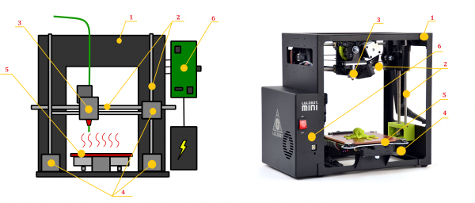
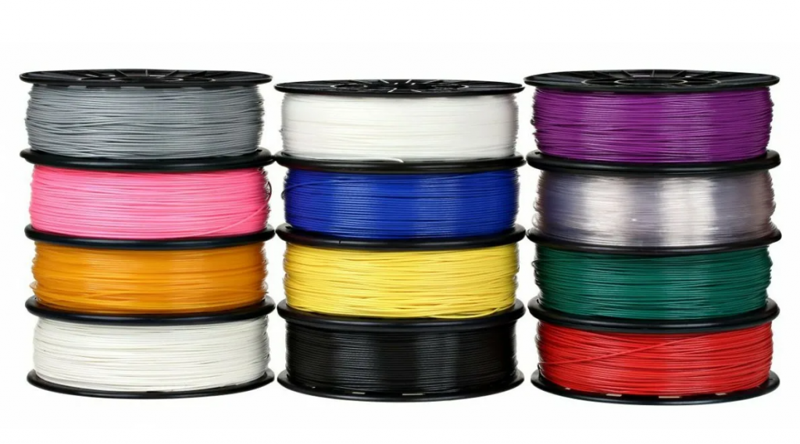
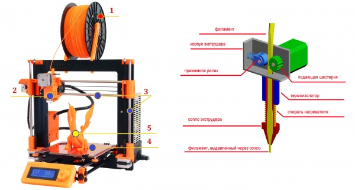
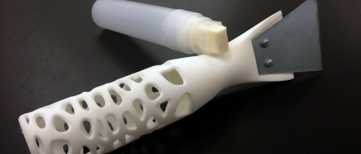
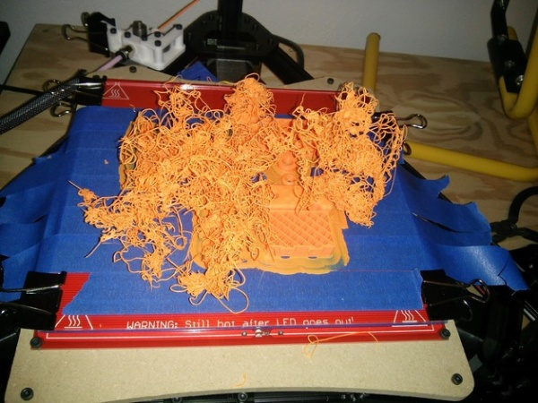

Что такое 3D-принтер?
Далее мы рассмотрим самый распространённый тип 3D-принтеров, который работает по технологии FDM (метод послойного наплавления).
Из чего состоит 3D-принтер?
3D-принтер состоит из корпуса (1), закрепленных на нем направляющих (2), по которым перемещается печатающая головка (3) с помощью шаговых двигателей (4), рабочего стола (5), на котором выращивается изделие; и всё это управляется электроникой (6).
Чем печатает 3D-принтер?
асходные материалы (филаменты) для 3D-принтеров представляют из себя пластиковые нити, намотанные на катушки. Расходные материалы бывают различных типов и свойств. Килограмм самого дешевого пластика можно купить за какие-то 500 руб., хотя более интересные варианты (например, имитаторы древесины или песчаника с наполнителями из настоящей древесины или камня) уже могут обойтись в несколько раз дороже.
Как работает 3D-принтер?
Нить (филамент) (1) поступает в печатающую головку (Экструдер) (2), в которой разогревается до жидкого состояния и выдавливается через сопло экструдера. Шаговые двигатели с помощью зубчатых ремней приводят в движение Экструдер (2), который перемещается по направляющим (3) и наносит пластик на платформу (4) слой за слоем. Снизу в вверх. В итоге ваше изделие (5) растёт слой за слоем.
Обработка распечатанных 3D-моделей
Одна из проблем, с которой встречаются все фанаты FDM 3D-печати без исключения, это ребристость внешних поверхностей. Так как сама технология основана на последовательном нанесении слоев пластика, этого эффекта не избежать. Можно, конечно, сделать его менее заметным за счет повышения вертикального разрешения принтера (т.е. нанесения более тонких слоев), но полностью избавиться от ребристости не получится.
До обработки горелкой
После обработки горелкой
Как правило, термообработка не дает хороших результатов – регулировать нагревание поверхности достаточно сложно, а это приводит в итоге к вскипанию пластика, проседанию или просто выделению токсичных паров. Тем не менее, этот метод можно попробовать на монолитных моделях из PLA-пластика.
Более многообещающей является химическая обработка, однако и она сопряжена с определенными сложностями. Кроме технологических проблем, актуальна проблема реагентов – разные пластики реагируют с разными растворителями. Если ацетон прекрасно растворяет ABS-пластик, то на PLA-пластик он почти не имеет эффекта. С лимоненом же все с точностью до наоборот.
Ручная обработка
Неудивительно, что первым делом 3D-мейкеры вооружились обычными кисточками с натуральным ворсом (синтетика может раствориться) в попытках сгладить свои модели. Однако, обработка с помощью кисточки – дело трудоемкое, да еще и требующее определенной сноровки. Ведь уже размягченный пластик легко деформировать самой кисточкой, то есть волоски будут оставлять на пластике след, который может и не выровняться перед тем, как ацетон испарится. Сравнять ярко выраженные неровности таким методом можно, но добиться ровной поверхности достаточно сложно.
Попыткой создать специальный инструмент для ручной обработки стало устройство под названием Makeraser. По сути, это простой фломастер с резервуаром, наполненным ацетоном или ацетоновым клеем, и встроенным скребком для снятия моделей с платформы. С точки зрения практичности, этот инструмент лучше подходит для склеивания частей модели или нанесения ABS/ацетонового клея на рабочий столик непосредственно перед печатью для борьбы с закручиванием нижних слоев.
Погружение в ацетон
Более перспективным и наиболее простым методом является погружение в ацетон. Выдержка модели из ABS-пластика в неразбавленном ацетоне около 10 секунд вполне достаточна для растворения внешнего слоя модели. Конкретное время выдержки может варьироваться в зависимости от качества исходной модели и концентрации ацетона. Также можно воспользоваться техническим растворителем.
Как избежать деформации моделей при 3D-печати?
Нет ничего «приятнее», чем отойти от принтера на пару часов и подремать, а вернувшись, найти вот это:
Знакомая картина? Да, это те самые «ангельские волосы», «спагетти» или «вермишель», получаемые при срыве модели с рабочего стола. Причиной такого бедствия зачастую служит деформация слоев. Закручивание краев модели вверх приводит к тому, что экструдер цепляет модель и банально ломает или срывает ее с платформы. Дальше же начинается артистичное наполнение окружающей среды пластиковой нитью.
Мы предлагаем рассмотреть следующие методы устранения деформации:
- Используйте подогреваемую платформу
- Выберите правильную адгезию
- Чистота стола
- Калибровка по высоте
- Снизьте скорости печати
- Не простудите свою модель
- Убавьте температуру экструдера
- Уменьшите плотность модели
- Печатайте с подложкой
- Используйте ушки
- Используйте пороги
Как прочистить засорившееся сопло экструдера?
Эта проблема решается довольно просто, но требует соответствующих инструментов. Вам понадобится небольшое сверло <0,35 мм или что-нибудь еще, что может послужить сверлом, но при этом будет достаточно тонким, чтобы войти в отверстие вашего экструдера. Очень удобно использовать для этой цели гитарную струну толщиной 0.33мм, которую можно легко найти в любых магазинах музыкальных инструментов.
Другая альтернатива - использование ножек резистора или светодиода, так как они достаточно тонки, чтобы пройти через отверстие сопла экструдера.
- Выньте весь оставшийся филамент из экструдера
- Нагрейте экструдер до оптимальной температуры для данного материала
- Вставьте небольшое сверло в отверстие сопла и очистите его от остатков, немного поворачивая сверло (будьте осторожны, чтобы не сломать его)